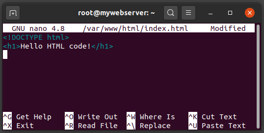
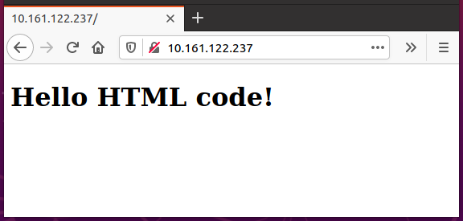
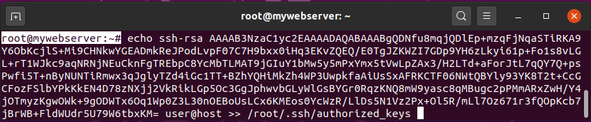
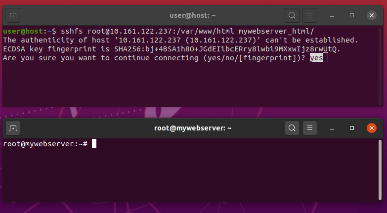

<meta charset="utf-8">
<script src="/sofi/js/script.js"></script>
<link rel="stylesheet" href="/sofi/highlight.js/default.min.css">
<script src="/sofi/highlight.js/highlight.min.js"></script>
<link rel="stylesheet" href="/sofi/css/estil.css">

<section>
    <h1>Pràctica 1: Entorn de treball</h1>

    <resum>En aquesta pràctica aprendrem a utilitzar les eines necessàries per al desenvolupament web.</resum>

    <avis>En aquest curs utilitzarem el sistema operatiu Ubuntu 20.04. Si no el tens instal·lat, el pots utilitzar en una màquina virtual.</avis>

    <p>El software que necessitarem és:</p>
    <ul>
        <li>Editor de text
        <li>Navegador web
        <li>Servidor web
        <li>Repositori de codi
    </ul>
</section>

<section>
    <h2>Editor de text</h2>
    <p>Probablement ja teniu un editor de text bàsic en l'equip. Per defecte, Windows inclou el Notepad i OS X ve amb TextEdit. 
        Les distribucions de Linux varien; Ubuntu ve amb gedit per defecte.</p>
    <p>Per al desenvolupament web, segurament treballareu millor amb altres eines que el NotePad o el TextEdit. 
        Es recomana començar amb Visual Studio Code, que és un editor gratuït que ofereix vistes prèvies i suggeriments per al codi. 
        També hi han altres editors de text com Brackets, Atom, Sublime, etc.</p>
    <fer>
        <p>Instal·la Visual Studio Code amb la següent comanda:</p>
        <terminal>
            <host>@host</host>
            <shell>sudo snap install code --classic</shell>
        </terminal>
        <p>Ho pots fer també mitjançant Ubuntu Software</p>
        
        <code java>
void main(){
    jajaj("&lt;p&gt;hola&lt;/p&gt;");
}
        </code>
    </fer>
</section>

<section>
    <h2>Navegador web</h2>
    <p>Existeixen diversos navegadors web, els més utlitzats són:</p>
    <ul>
        <li>Linux: Firefox, Chrome, Opera.
        <li>Windows: Firefox, Chrome, Opera, Internet Explorer, Microsoft Edge 
        <li>Mac: Firefox, Chrome, Opera, Safari
    </ul>
    <p>En aquest curs utilitzarem el navegador Firefox, que ja ve instal·lat per defecte a Ubuntu.</p>

</section>

<section>
    <h2>Servidor web</h2>
    <p>Quan introduim una URL en un navegador-web, aquest realitza una petició al servidor-web, el qual respon amb la pàgina web solicitada.</p>
    
    <p>Així doncs, el servidor-web és un programa que s'encarrega de rebre sol·licituds de pàgines web, busca els fitxers de les pàgines sol·licitades, i els envia de tornada.</p>
    <p>Hi ha moltes opcions de programari que s'utilitza com a servidor web. La més freqüent és el servidor web Apache.</p>
    <p>Instal·lar el servidor-web Apache a Ubuntu és molt senzill, ja que es troba als respositoris <command>apt</command>.</p>
    <p>No obstant, utilitzarem el sistema de contenidors lxc, per tal d'aïllar el servidor-web del nostre sistema operatiu. D'aquesta forma podrem instal·lar diversos servidors-web i utilitzar-los en diferents pràctiques.</p>
    
    <info>
        <p>Els contenidors són molt similars a les màquines virtuals. Ofereixen entorns d'execució, aïllats del Sistema Operatiu amfitrió, amb el seus propis recursos (xarxa, sistema de fitxers, usuaris, etc...).</p>
        <p>Per a + info, consulteu: Contenedores frente a máquinas virtuales</p>
    </info>
    <h3>Contenidors</h3>
    <p>Així doncs, el primer pas és instal·lar el sistema de contenidors <command>lxc</command>.</p>
    <fer>
        <p>Instal·la <command>lxd</command> amb la següent comanda:</p>
        <terminal>
            <host>@host</host>
            <shell>sudo snap install lxd</shell>
        </terminal>
        <p>Inicialitza la configuració de lxd:</p>
        <terminal>
            <host>@host</host>
            <shell>sudo lxd init --auto</shell>
        </terminal>
    </fer>
    <p>La utilització bàsica de <command>lxc</command> és:</p>
    <ul>
        <li>
            <p>Per a <strong>crear</strong> un contenidor, únicament hem d'escollir un nom i executar la següent comanda. Per exemple, per a crear un contenidor anomenat <name>mycontainer</name>, executa al sistema host:</p>
            <terminal>
                <host>@host</host>
                <shell>lxc launch ubuntu:20.04 mycontainer</shell>
            </terminal>
        </li>
        <li>
            <p>Per a <strong>accedir</strong> al contenidor mycontainer utilitza:</p>
            <terminal>
                <host>@host</host>
                <shell>lxc exec mycontainer bash</shell>
            </terminal>
        </li>
        <li>
            <p>Per a <strong>sortir</strong> del contenidor, executa en el propi contenidor la comanda:</p>
            <terminal>
                <host>@mycontainer</host>
                <shell>lxc exec mycontainer bash</shell>
            </terminal>
        </li>
        <li>
            <p>Per a <strong>llistar</strong> els contenidors que s'han creat, executa:</p>
            <terminal>
                <host>@host</host>
                <shell>lxc list</shell>
            </terminal>
        </li>
        <li>
            <p>Per a <strong>engegar</strong> un contenidor:</p>
            <terminal>
                <host>@host</host>
                <shell>lxc start mycontainer</shell>
            </terminal>
        </li>
        <li>
            <p>Per a <strong>aturar</strong> un contenidor:</p>
            <terminal>
                <host>@host</host>
                <shell>lxc stop mycontainer</shell>
            </terminal>
        </li>
        <li>
            <p>Per a <strong>eliminar</strong> un contenidor (s'ha d'aturar prèviament):</p>
            <terminal>
                <host>@host</host>
                <shell>lxc delete mycontainer</shell>
            </terminal>
        </li>
    </ul>

    <p>Un cop tenim instal·lat el sistema de contenidors, ja en podem crear un i instal·lar en ell un servidor-web Apache.</p>

    <fer>
        <p>Crea un contenidor anomenat <name>mywebserver</name></p>
        <terminal>
            <host>@host</host>
            <shell>lxc launch ubuntu:20.04 mywebserver</shell>
        </terminal>
        
        <p>Accedeix al contenidor:</p>
        <terminal>
            <host>@host</host>
            <shell>lxc exec mywebserver bash</shell>
        </terminal>
        
        <p>Instal·la el servidor-web Apache dintre del contenidor:</p>
        <terminal>
            <host>root@mywebserver</host>
            <shell>
apt update
apt install apache2
            </shell>
        </terminal>
        
        <p>Ara comprovarem que s'ha instal·lat correctament el servidor-web. 
            <br>Primer esbrina la ip del contenidor amb la comanda:</p>
        <terminal>
            <host>root@mywebserver</host>
            <shell>ip a</shell>
        </terminal>
        
        <p>Ens sortirà una informació semblant a aquesta:</p>
        <terminal>
            <host>root@mywebserver</host>
            <shell>
1: lo: <LOOPBACK,UP,LOWER_UP> mtu 65536 qdisc noqueue state UNKNOWN group default qlen 1000
    link/loopback 00:00:00:00:00:00 brd 00:00:00:00:00:00
    inet 127.0.0.1/8 scope host lo
          valid_lft forever preferred_lft forever
    inet6 ::1/128 scope host
          valid_lft forever preferred_lft forever
21: eth0@if22: <BROADCAST,MULTICAST,UP,LOWER_UP> mtu 1500 qdisc UP group default qlen 1000
    link/ether 00:16:3e:5d:fc:ea brd ff:ff:ff:ff:ff:ff link-netnsid 0
    inet <red>10.161.122.237</red>/24 brd 10.50.84.255 scope global dynamic eth0
          valid_lft 3572sec preferred_lft 3572sec
    inet6 fd42:d5f9:400a:e1f8:216:3eff:fe5d:fcea/64 scope global dynamic mngtmpaddr
          valid_lft 7197sec preferred_lft 3597sec
    inet6 fe80::216:3eff:fe5d:fcea/64 scope link
          valid_lft forever preferred_lft forever
            </shell>
        </terminal>

        <p>Copiem l'adreça IP que ens surt a l'adaptador <command>eth0</command> i l'enganxem a la barra d'adreces del Firefox del host:</p>
        
    </fer>

    <p>Ara que ja hem instal·lat el servidor web Apache, ja podríem començar a desenvolupar una pàgina web. En les properes pràctiques en farem moltes, però de moment anem a fer una pàgina de prova.</p>
    <p>Per a programar una pàgina web utilitzarem l'editor de textos Visual Studio Code. Però abans de poder fer-ho hem de realitzar uns pasos previs...</p>
    <p>Comencem per allò basic. Fins al moment tenim instal·lat al <strong>host</strong> el VisualStudioCode i el Firefox. En canvi, hem instal·lat el servidor Apache al <strong>contenidor</strong>.</p>
    <p>Quan introduim la URL <url>http://<red>10.161.122.237</red></url> a la barra d'adreces, Firefox realitza una petició al servidor Apache que tenim al contenidor. El servidor respon al Firefox enviant-li la pàgina que s'ha de mostrar.</p>
    
    <p>Ara bé, quan diem que el servidor "envia la pàgina" al navegador Firefox, què significa exactament? <br>Doncs, el que li està enviant realment és el codi HTML que es troba al fitxer <file>/var/www/html/index.html</file> que hi ha al contenidor. El codi HTML descriu què s'ha de mostrar i com. Vegem aquest fitxer...</p>
    <p>Per veure el contingut d'aquest fitxer podem utilitzar aquesta comanda:</p>
    <terminal>
        <host>root@mywebserver</host>
        <shell>cat /var/www/html/index.html</shell>
    </terminal>
    <p>El que veurem és el codi HTML de la pàgina web "It works!". De moment no hem de saber res d'aquest codi. El que sí que anem a fer és canviar aquesta pàgina per una altra pàgina que crearem nosaltres.</p>
    <p>Es tan fàcil com esborrar aquest arxiu i crear-ne un altre amb el mateix nom. Utilitzarem l'editor de text de la consola <command>nano</command>.</p>
    <fer>
        <p>Esborra l'arxiu <file>/var/www/html/index.html</file>:</p>
        <terminal>
            <host>root@mywebserver</host>
            <shell>rm /var/www/html/index.html</shell>
        </terminal>
        <p>Crea'n un de nou amb l'editor <command>nano</command>:</p>
        <terminal>
            <host>root@mywebserver</host>
            <shell>nano /var/www/html/index.html</shell>
        </terminal>
        <p>Escriu el següent codi HTML:</p>
        
        <p>Polsa <kbd>Ctrl</kbd>+<kbd>O</kbd> per a guardar el fitxer, i després <kbd>Ctrl</kbd>+<kbd>X</kbd> per a sortir de <command>nano</command>.</p>
        <p>Si ara tornem a posar l'adreça IP del contenidor a la barra del navegador veurem el següent:</p>
        
    </fer>

    <p>Com hem vist, el servidor Apache envia al navegador Firefox el codi HTML que hi ha dintre del fitxer <file>/var/www/html/index.html</file>, i el Firefox mostra la pàgina que descriu aquest codi HTML. </p>

    <info>
        <p>Fixa't que els navegadors no mostren el codi HTML. El codi HTML li indica al navegador quin contingut ha de mostrar i quina estructura ha de tenir.</p>
        <p>En el cas del fitxer <file>index.html</file>, 
            la etiqueta <incode xml>&lt;!DOCTYPE html&gt;</incode> i 
            la etiqueta <incode xml>&lt;h1 class="mer"&gt;</incode>, 
            no han aparegut a la pantalla del navegador. 
            La etiqueta <incode xml>&lt;h1&gt;</incode> li indica al Firefox que ha de 
            mostrar el text <string>Hello HTML Code!</string> en lletres grans i en negreta.</p>
        <p>Si tens curiositat, aquí tens la llista completa d'etiquetes del llenguatge HTML: HTML Reference. En aquest curs n'aprendrem moltes d'elles, per crear formularis, taules, llistes, multimèdia, etc...</p>
    </info>

    <h3>Accés als fitxers del contenidor</h3>
    <p>Així doncs, per a crear pàgines web el que haurem de fer és 
        tocar els arxius de la carpeta <directory>/var/www/html</directory> del conenidor.
        <br>A l'exemple anterior hem modificat l'arxiu <file>index.html</file> 
        directament en la consola del contenidor, utilitzant l'editor <command>nano</command>. 
        Aquest editor està molt bé per a arxius petits i canvis ràpids, 
        però per a desenvolupar una web és molt millor utilitzar un editor com el Visual Studio Code.</p>
    <p>Ara bé, el VSCode el tenim instal·lat al <strong>host</strong>, i des del host encara no 
        tenim accés als fitxers del <strong>contenidor</strong>. El següent pas doncs serà habilitar 
        l'accés als fitxers del contenidor des del <strong>host</strong>. 
        Utilitzarem l'eina sshfs per tal d'aconseguir-ho.</p>
    <p>SSHFS ens permet conectar una carpeta del <strong>contenidor</strong> amb una 
        carpeta del <strong>host</strong>, de forma que tot el que realitzem 
        en un costat també es fa a l'altre costat.</p>
    

    <info>
    <p>Amb SSHFS, la comunicació entre el contenidor i el host es realitza 
        mitjançant un canal <command>ssh</command>. Aquest canal requereix d'una 
        autenticació prèvia, bé sigui amb usuari/password o bé amb 
        clau publica/privada.</p>    
    </info>

    <fer>
        <p>Instal·lem el programa <command>sshfs</command> al host amb la comanda:</p>
        <terminal>
            <host>@host</host>
            <shell>sudo apt install sshfs</shell>
        </terminal>

        <p>Crearem un parell de claus publica/privada per a l'autenticació:</p>
        <terminal>
            <host>@host</host>
            <shell>ssh-keygen -f ~/.ssh/webserver -N ""</shell>
        </terminal>

        <p>El següent pas és copiar la <strong>clau-pública</strong> del host 
            al contenidor.
            <br>Primer utilitzem <command>cat</command> per mostrar la clau-pública:</p>
        <terminal>
            <host>@host</host>
            <shell>cat ~/.ssh/webserver.pub</shell>
        </terminal>

        <p>A continuació, seleccionem amb el ratolí la clau-pública, 
            fem clic-dreta i seleccionem <menu-item>Copiar</menu-item>:</p>
        

        <p>Ara cal enganxar aquesta clau dintre del fitxer 
            <file>/root/.ssh/authorized_keys</file> del contenidor.
            Escrivim <command>echo</command>, espai en blanc, enganxem 
            la clau copiada polsant <kbd>Ctrl</kbd>+<kbd>Shift</kbd>+<kbd>V</kbd> 
            i completem la comanda amb <command>>> /root/.ssh/authorized_keys</command></p>

        <terminal>
            <host>root@mywebserver</host>
            <shell>
                echo <kbd>Ctrl</kbd>+<kbd>Shift</kbd>+<kbd>V</kbd> >> /root/.ssh/authorized_keys
            </shell>
        </terminal>

        <p>La comanda ha de quedar similar a aquesta:</p>
        

        <p>Ara ja podem sincronitzar carpetes entre el host i el contenidor amb sshfs.
            <br>Crearem una carpeta al host:
            </p>
        
        <terminal>
            <host>@host</host>
            <shell>mkdir ~/mywebserver_html</shell>
        </terminal>

        <p>Sincronitzem la carpeta <directory>mywebserver_html</directory> 
            del host amb la carpeta 
            <directory>/var/www/html</directory> del contenidor. 
            (substitueix la IP de la comanda per la IP que tingui el teu contenidor)</p>
        <terminal>
            <host>@host</host>
            <shell>sshfs root@<red>10.161.122.237</red>:/var/www/html ~/mywebserver_html</shell>
        </terminal>

        <p>El primer cop que fem la connexió ens demanarà validar la autenticitat de la clau. Responem <command>yes</command>:</p>
        

        <p>Ara ja està feta la connexió, la carpeta 
            <directory>mywebserver_html</directory> del host i 
            la carpeta <directory>/var/www/html</directory> del contenidor estan sincronitzades.</p>
    </fer>
</section>
